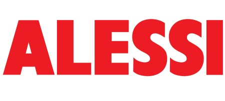

홈 > 브랜드 매거진 > 알레시
알레시
알레시(Alessi)는 1921년 조반니 알레시가 이탈리아 오메냐에서 설립한 주방·생활용품 디자인 브랜드다. 금속 가공 공방에서 출발해 세계적 건축가·산업디자이너와 협업한 아이코닉 디자인 오브제로 유명하다.
산업 분야 홈·라이프스타일 · 공개 등급 편집 검수 · 브랜드 평가 4.6 ★


한눈에 보는 브랜드
알레시(Alessi)는 1921년 조반니 알레시가 이탈리아 오메냐에서 설립한 주방·생활용품 디자인 브랜드다. 금속 가공 공방에서 출발해 세계적 건축가·산업디자이너와 협업한 아이코닉 디자인 오브제로 유명하다.
브랜드 관점
알레시는 산업 공예를 디자인 아이콘으로 전환한 이탈리아 디자인 팩토리로, 디자이너 협업이 핵심 자산이다. 헤리티지, 핵심 제품, 모회사 구조를 함께 보면 홈·라이프스타일 안에서의 위치가 또렷해진다.
시작과 성장
지오반니 알레시가 1921년에 설립한 이탈리아의 주방, 생활용품 브랜드로, 세계적인 디자이너와 협업하여 유니크한 주방, 생활용품을 제작 · 판매함.
브랜드 아이덴티티
알레시의 아이덴티티는 브랜드명, 로고 사용 여부, 업종 언어, 국가적 배경을 중심으로 정리됩니다. 대표 로고 자산이 연결되어 있어 시각 식별자를 함께 검토할 수 있습니다.
확장 지식
이탈리아 오메냐에 기반하며 멘디니·스타크·로시 등 디자이너와 협업해 MoMA·V&A·퐁피두 등에 작품이 소장됐다.
제품과 서비스
주방용품·테이블웨어·소형 가전·생활 소품을 디자이너 협업으로 전개한다. 기능성과 조형미를 결합한 시그니처 컬렉션이 핵심이다.
사람들
창업자는 조반니 알레시(Giovanni Alessi)이며, 가족경영으로 이어져 왔다.